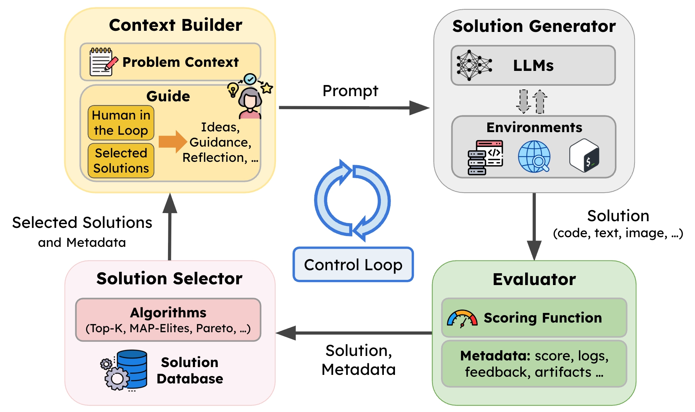
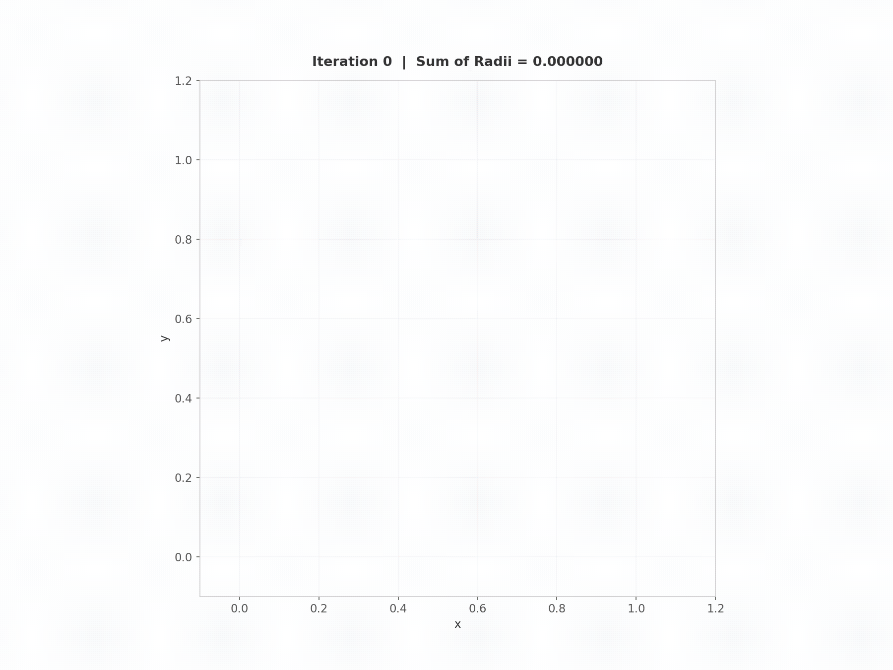
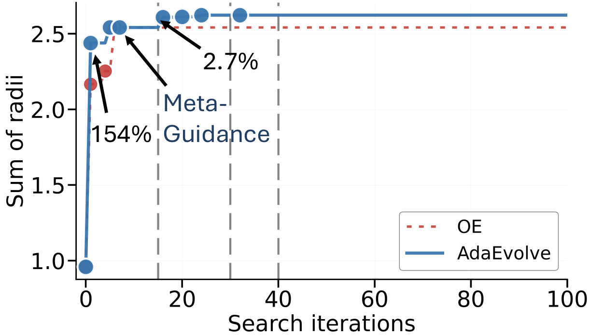
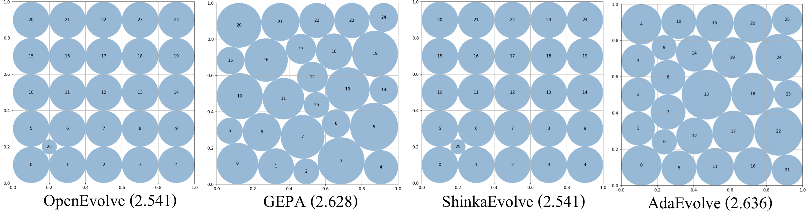
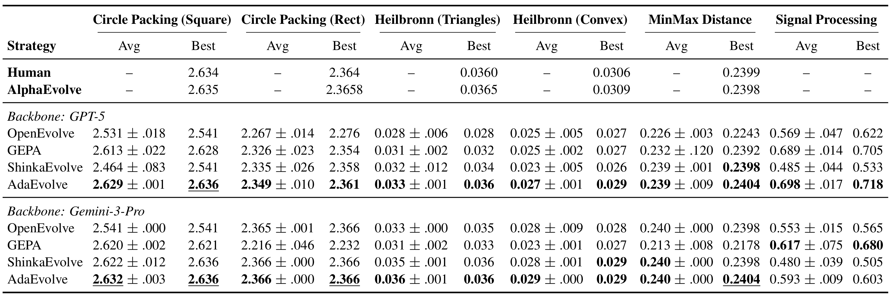
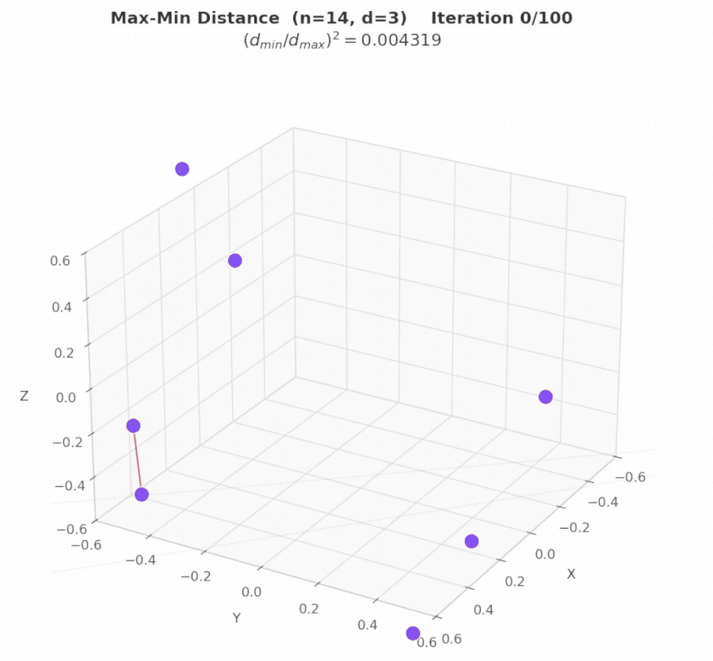
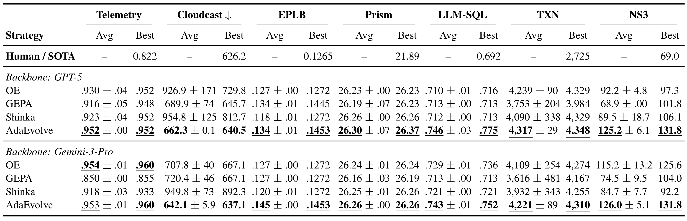
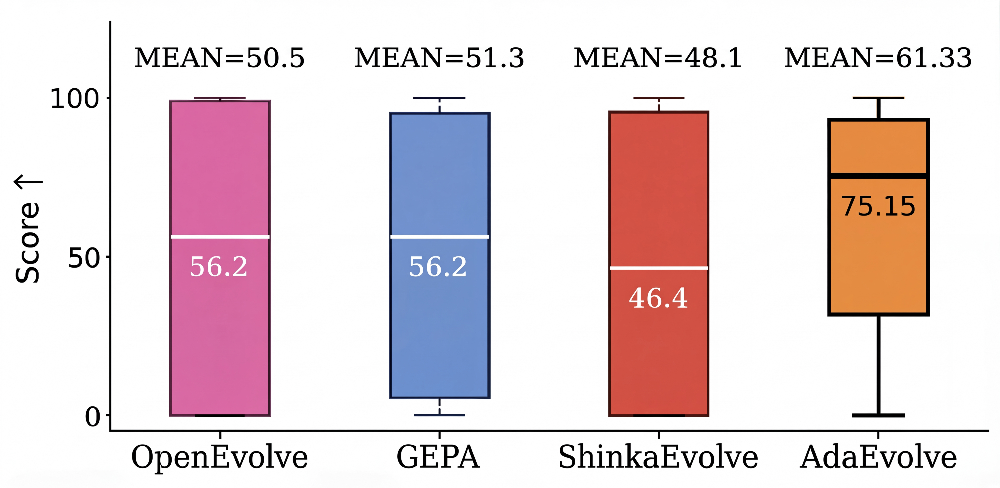

LLM-driven evolutionary search is the dominant paradigm for automated algorithm discovery, but existing systems such as AlphaEvolve, OpenEvolve, GEPA, and ShinkaEvolve rely on static search policies (fixed exploration rates, uniform resource allocation, and rigid prompts), creating a fundamental mismatch between sophisticated LLM mutation operators and the naive controllers governing them.
We introduce AdaEvolve, a hierarchical adaptive algorithm that treats fitness improvement trajectories similarly to a gradient analogue for zeroth-order optimization. A single accumulated improvement signal drives three synchronized adaptation levels: at the local level, dynamic exploration intensity within subpopulations; at the global level, bandit-based compute routing across subpopulations; and meta-level strategy generation when numerical adaptation is insufficient.
Results across diverse problems:
- 🏆 Frontier-CS (172 algorithmic tasks): +34% median score over the strongest open-source baseline; 3× mean improvement over single-call GPT-5 generation.
- 📐 Mathematical optimization (6 tasks): matches or exceeds AlphaEvolve and human SOTA on 4/6 problems, including new best-known results on Circle Packing (N=26) and Circle Packing Rectangle (N=21).
- ⚙️ ADRS systems optimization (7 tasks): wins all 7 tasks across both GPT-5 and Gemini-3-Pro backbones, achieving human-competitive or superior performance on 6/7, including 41% lower cross-cloud transfer cost, 14% better MoE load balance, and 29% lower KV-cache pressure.
- 🔁 Zero manual tuning: requires only a model name and iteration budget. All search dynamics such as exploration rates, island counts, prompt strategies adapt automatically.
Try it out: AdaEvolve & the SkyDiscover framework are fully open-source.
The Problem: Evolutionary Search That Can’t Adapt
LLM-driven evolutionary search is emerging as a dominant strategy for automated algorithm discovery. Systems like AlphaEvolve, OpenEvolve, and FunSearch use LLMs as semantic mutation operators, iteratively proposing, evaluating, and refining candidate programs inside an evolutionary loop. This approach led to remarkable results, from new matrix multiplication algorithms to breakthroughs in combinatorial mathematics.
However, these systems share a key limitation: they often rely on carefully tuned hyperparameters and can require long search runs to converge.
This is because current algorithms rely on fixed exploration rates, rigid prompt templates, and uniform resource allocation across program candidates, which are all decided before the run begins. This leads to a fundamental mismatch. The LLM mutation operator is sophisticated and context-aware, but the algorithm controlling it is blind to whether the search is making progress, stagnating, or trapped in a local optimum.
The consequences of these limitations are not only theoretical. On the Circle Packing benchmark, OpenEvolve fails to converge unless a human operator stops the run after 100 iterations, changes the configuration file to a “refinement” mode, and restarts. The algorithm cannot adapt its own behavior, so human intervention is required to achieve convergence.
In continuous optimization, adaptive methods like Adam and AdaGrad transformed deep learning by dynamically adjusting learning rates using the history of gradient magnitudes. When gradients are large, updates accelerate; when they diminish, the optimizer adjusts course.
In contrast, LLM-driven program synthesis is a zeroth-order (gradient-free) problem. There is no loss surface to differentiate. So how do you build an adaptive optimizer for code?
This is the problem AdaEvolve solves. AdaEvolve dynamically adjusts its own search behavior based on observed progress, without manual intervention.
The only inputs AdaEvolve needs from the user are the model name and the iteration budget. Everything else, such as exploration rates, island counts, prompt strategies, are adapted automatically.

Built on SkyDiscover
AdaEvolve is implemented as a search algorithm in SkyDiscover, our open-source framework for AI-driven scientific and algorithm discovery. This required approximately 2,500 lines of code. Implementing AdaEvolve as a standalone system would likely have required over 10,000 lines of code. This highlights the benefits of SkyDiscover’s modular architecture for implementing new evolutionary policies.
Why This Matters
Existing evolutionary discovery systems (OpenEvolve, GEPA, ShinkaEvolve) are monolithic, tightly coupling selection, prompt construction, evaluation, and resource allocation. As a result, modifying one component (e.g., parent selection) often requires modifying multiple components, which makes adaptive strategies difficult to implement.
SkyDiscover solves this by decomposing the evolutionary loop into four reusable, independently replaceable components:

- Context Builder. Builds prompts from the problem, prior solutions, and feedback.
- Solution Generator. Produces candidate solutions via LLM calls.
- Evaluator. Scores candidates and logs metadata in the solution database.
- Solution Selector. Maintains the solution pool and selects prior solutions to guide the next iteration.
The critical fifth element is the flexible control loop that orchestrates these four components. This is where AdaEvolve lives. Its three adaptation levels map naturally onto this architecture:
| AdaEvolve Level | SkyDiscover Component | What It Controls |
|---|---|---|
| Level 1: Local Adaptation | Solution Selector | How parents are sampled within each island (exploration vs. exploitation) |
| Level 2: Global Adaptation | Control Loop | Which island receives the next compute allocation (UCB bandit + dynamic spawning) |
| Level 3: Meta-Guidance | Context Builder | What strategic directives are injected into mutation prompts when progress stalls |
Getting Started with AdaEvolve
Using AdaEvolve is a single flag. From the command line:
CLI Usage
# Run AdaEvolve on circle packing
uv run skydiscover-run \
benchmarks/math/circle_packing/initial_program.py \
benchmarks/math/circle_packing/evaluator.py \
--search adaevolve \
--model gpt-5 \
--iterations 100Python API
from skydiscover import run_discovery
result = run_discovery(
initial_program="initial_program.py",
evaluator="evaluator.py",
search="adaevolve", # swap to "evox", "topk", "openevolve", etc.
model="gpt-5",
iterations=100,
)
print(result.best_score, result.best_solution)The Core Insight of AdaEvolve: Gradients for a Gradient-Free World
AdaEvolve’s key observation is that the trajectory of fitness improvements provides a signal analogous to gradient magnitudes. When a search trajectory yields substantial fitness gains, it signals a productive direction that should be exploited. When gains vanish, it signals stagnation requiring exploration or redirection.
We formalize this as the accumulated improvement signal. For each subpopulation (island) $k$, when a new program $p'$ is generated, we compute a normalized improvement:
where $f_k^*$ is the island’s current best fitness. This normalization makes the signal scale-invariant across different problems. The accumulated signal is then updated as an exponential moving average of squared improvements:
During stagnation, $\delta_t = 0$, so $G_t^{(k)}$ decays exponentially. During productive phases, it grows. This single scalar acts as a real-time volatility metric: high values mean the search is in a productive region; low values mean it has converged or is stuck.
This one signal drives all three levels of adaptation in AdaEvolve.
The Three Levels of Adaptation
Level 1: Local Adaptation – Modulating Exploration Within Islands
The most immediate use of $G_t^{(k)}$ is controlling the exploration–exploitation balance within each island. Rather than a fixed ratio (e.g., OpenEvolve’s static 30:70 split), AdaEvolve computes a dynamic exploration intensity:
where the behavior is intuitive:
- When $G_t^{(k)}$ is high (the island is productive), the denominator grows, $I_t$ approaches $I_{\min}$, and the search shifts toward exploitation, selecting high-fitness parents and prompting the LLM for targeted refinements.
- When $G_t^{(k)}$ is low (stagnation), $I_t$ rises toward $I_{\max}$, increasing exploration, selecting diverse parents and prompting the LLM for more novel solutions that are different from the previously picked parent programs.
This is the analogue of adaptive learning rate methods: accelerate in productive regions, widen the search in flat ones. But it happens automatically, every iteration, without any manual threshold.
Implementation note. In SkyDiscover’s code architecture, local adaptation lives in the AdaEvolveDatabase, which owns per-island adaptive state ($G_t^{(k)}$ signals and exploration intensities). The SAMPLE routine reads the current intensity to decide between fitness-proportional parent selection (exploitation) and uniform random selection (exploration), then passes the selected parents to the Context Builder, which constructs mode-appropriate prompts: refinement-focused for exploitation, diversity-encouraging for exploration. The database and the prompt logic never directly depend on each other; they communicate only through the intensity scalar.
Level 2: Global Adaptation – Selecting Islands
Level 1 optimizes how each island searches. Level 2 optimizes where the global compute budget goes. AdaEvolve models this as a multi-armed bandit, where each island is an arm.
A naive approach would use each island’s local improvement as the reward signal. But this creates a poor island bias. Consider:
- Island 1 is at fitness 100 and achieves a +10 improvement → $\delta = 0.10$
- Island 2 is at fitness 1 and finds a +0.5 improvement → $\delta = 0.50$
A bandit using local rewards would favor Island 2, despite Island 1’s improvement being far more valuable globally. AdaEvolve resolves this by normalizing rewards against the global best fitness:
This ensures a unit of improvement is valued equally regardless of which island produces it. Combined with decayed cumulative rewards (so stale early successes don’t dominate), this gives AdaEvolve an efficient resource allocation mechanism that continuously routes LLM calls to the most globally productive islands.
Dynamic island spawning. When $G_t^{(k)}$ drops below a threshold $\tau_S$ for all islands simultaneously, AdaEvolve spawns a new island seeded with a random program from the archive. Unlike frameworks that fix the number of islands upfront, AdaEvolve creates new subpopulations when the existing ones have exhausted their potential.
Implementation note. Island selection, spawning, migration, and UCB state are all centralized in the AdaEvolveDatabase. The evolution manager (AdaEvolveManager) simply calls the database at each iteration boundary to get the next island assignment, and never manipulates bandit statistics directly. This separation, enforced by SkyDiscover’s architecture, is what makes it possible to swap the entire resource allocation policy without touching the mutation or evaluation logic. The database also handles ring migration every $M$ iterations and dynamic island creation when all $G_t^{(k)}$ signals drop below $\tau_S$.
Level 3: Meta-Guidance – Escaping Conceptual Local Optima
While Levels 1 and 2 optimize the exploration-exploitation balance within and across islands, the search can still stagnate when the underlying solution paradigm itself is insufficient. A perfectly optimized greedy packer is still a greedy packer; no amount of temperature tuning will make it discover dynamic programming.
When global stagnation persists ($G_t^{(k)} \leq \tau_M$ for all islands), AdaEvolve triggers a qualitatively different intervention. A separate LLM call acts as a “System 2” supervisor: it reads the problem specification, the evaluator code, the current best program, and the history of failed attempts. From this analysis, it generates solution tactics: high-level strategic directives that force a structural shift in the search.
For example, on the Circle Packing problem, Meta-Guidance analyzed why greedy geometric initializations were plateauing and proposed: “Apply constrained continuous optimization over circle positions using SLSQP.” This tactic was then injected into mutation prompts, transforming the search from open-ended code improvement to targeted implementation of a specific mathematical strategy.
The three levels operate at different timescales: intensity adapts every iteration, island selection operates across iterations, and Meta-Guidance triggers only when numerical adaptation proves insufficient. This hierarchy means AdaEvolve uses cheap interventions first and escalates only when needed.
Implementation note. Solution tactics are injected through SkyDiscover’s Context Builder interface. When the tactics tracker (owned by the database) detects global stagnation, the AdaEvolveManager invokes a separate LLM call to generate tactics, which are then appended to subsequent mutation prompts via the standard context-building pipeline. Because tactics flow through the same prompt interface as all other context (problem spec, prior solutions, feedback), they compose cleanly with any future prompt strategies, with no special-casing required.
Watching AdaEvolve Work: Circle Packing
Case Study
To make the three levels concrete, we trace AdaEvolve’s actual behavior on the Circle Packing (Square, N=26) problem: pack 26 non-overlapping circles inside a unit square to maximize the sum of their radii.


Iterations 1–7: Exploration discovers structure. Two islands begin in parallel with high exploration intensity. Random initialization at iteration 1 discovers a dense feasible layout, jumping the score from 0.96 to 2.44 (+154%). Subsequent refinement pushes this to 2.54 by iteration 7. Then progress stalls.
Iteration 15: Meta-Guidance breaks the conceptual barrier. Global stagnation is detected. The meta-analysis LLM examines the evaluator and the current best program, identifies that geometric heuristics have hit their ceiling, and proposes a constrained optimization tactic using SLSQP. At iteration 16, exploitation applies this tactic to the best layout, jumping the score from 2.54 to 2.61 (+2.7%). Runs without Meta-Guidance remain stuck near 2.51.
Iterations 20–40: Exploitation refines. With $G_t^{(k)}$ now elevated from the Meta-Guidance breakthrough, exploration intensity drops and the search shifts decisively toward exploitation. Local refinement of hex-staggered configurations yields steady gains: 2.61 → 2.62 → 2.623.
Iterations 45–65: Migration and convergence. Ring migration propagates the strongest layouts across islands. Fine-grained refinement closes the remaining gap: 2.624 → 2.636, where the search converges.
The visual difference is striking. OpenEvolve and ShinkaEvolve both plateau at 2.541 with visibly suboptimal layouts, while AdaEvolve’s final configuration achieves a near-optimal dense packing.

Results
We evaluated AdaEvolve against open-source baselines (OpenEvolve, GEPA, ShinkaEvolve) across three benchmark families, using identical backbone models (GPT-5 and Gemini-3-Pro) and matched iteration budgets.
Mathematical Optimization (6 tasks)
Across six combinatorial geometry problems (circle packing, Heilbronn triangles, min-max distance, and signal processing) AdaEvolve achieves the best results among all open-source methods and matches or exceeds AlphaEvolve and human SOTA on 4 out of 6 tasks.
The largest gains appear on problems with deceptive fitness landscapes (Heilbronn Triangle, MinMaxDist), where fixed-policy baselines plateau after early progress. These are exactly the problems where adaptive exploration–exploitation control matters most.


Systems Optimization (7 tasks)
On seven real-world systems tasks from the ADRS benchmark, spanning MoE load balancing, multi-cloud data transfer, transaction scheduling, and congestion control, AdaEvolve wins on all seven tasks across both model backbones.
The largest gains occur on tasks with sparse, bursty improvements (TXN, Cloudcast), where fixed strategies either over-exploit early trajectories or fail to reallocate resources after stagnation. On tasks with smoother reward signals (Prism, LLM-SQL), AdaEvolve matches the strongest baselines, showing that adaptivity doesn’t hurt when static strategies happen to work.
AdaEvolve achieves human-competitive or superior performance on 6 out of 7 tasks.

Frontier-CS: Algorithm Design Problems
The most dramatic results come from Frontier-CS, a benchmark of 172 open-ended computer science problems where global optima are unknown and solutions are evaluated via executable programs.
The bottom row is the most telling. GPT-5 with a single call achieves a median score of zero, meaning more than half of these problems remain unsolved without evolutionary search. AdaEvolve triples the mean performance of single-call generation and improves the median by 34% over the strongest open-source baseline.

What Matters Most: Ablation Results
We ablated each of the three adaptation levels on Circle Packing and Signal Processing:
| Setting | Circle Packing | Signal Processing |
|---|---|---|
| Full AdaEvolve | 2.629 ± 0.003 | 0.718 ± 0.019 |
| w/o Local Adaptation | 2.591 ± 0.048 | 0.681 ± 0.021 |
| w/o Adaptive Island Selection | 2.618 ± 0.005 | 0.619 ± 0.054 |
| w/o Meta-Guidance | 2.521 ± 0.028 | 0.548 ± 0.011 |
Removing Meta-Guidance causes the largest drop on both problems. This makes sense: Levels 1 and 2 optimize how the search navigates a given solution space, but Level 3 is what expands the space itself. Without it, the search can perfectly tune its exploration intensity and resource allocation but still remain trapped in a suboptimal algorithmic paradigm.
All three levels contribute, and their relative importance varies by problem (bandit-based island selection matters more for Signal Processing, local adaptation matters more for Circle Packing), which is precisely why AdaEvolve includes all three rather than betting on any single mechanism.
Conclusion
AdaEvolve demonstrates that the gap between sophisticated LLM mutation operators and naive search controllers is a real and consequential bottleneck. By treating fitness improvement trajectories as a gradient analogue and using them to drive hierarchical adaptation (from within-island exploration intensity to cross-island resource allocation to meta-level strategy generation), AdaEvolve consistently outperforms other open-source baselines across 185 diverse problems, often matching or exceeding the best known human and AI solutions.
AdaEvolve requires only a model, a problem specification (as a prompt), an evaluator, and an iteration budget. Exploration schedules, island counts, prompt strategies, and other search dynamics adapt automatically during the run.
Try It, Extend It, Build On It
AdaEvolve is available as a built-in search algorithm in SkyDiscover. To apply it to your own problem, you need two files (an initial program and an evaluator) and a single command:
Quick Start
uv run skydiscover-run my_initial_program.py my_evaluator.py \
--search adaevolve --model gpt-5 --iterations 100SkyDiscover’s modular architecture means you can also use AdaEvolve as a starting point for your own discovery algorithms. The four-component decomposition (Context Builder, Solution Generator, Evaluator, Solution Selector) and the programmable control loop make it possible to swap individual pieces (a new selection strategy, a different prompting approach, a custom adaptation signal) without rewriting the rest of the system.
We invite the community to use, extend, and build on AdaEvolve:
- Use AdaEvolve on new optimization and discovery problems
- Compare it against other methods in SkyDiscover’s unified benchmark suite
- Extend it with new algorithms using a simple interface
- Contribute new benchmarks and algorithms back to SkyDiscover
📄 Paper · 💻 Code · 🏗️ Framework · 📬 Contact
Citation
If you use AdaEvolve in your research, please cite as:
@article{cemri2026adaevolve,
title={AdaEvolve: Adaptive LLM-Driven Zeroth-Order Optimization},
author={Cemri, Mert and Agarwal, Shubham and Gupta, Akshat and Liu, Shu and Cheng, Audrey and Naren, Ashwin and Mang, Qiuyang and Erdogan, Lutfi Eren and Sen, Koushik and Zaharia, Matei and Dimakis, Alexandros G. and Stoica, Ion},
year={2026},
journal={arXiv preprint arXiv:2602.20133}
}